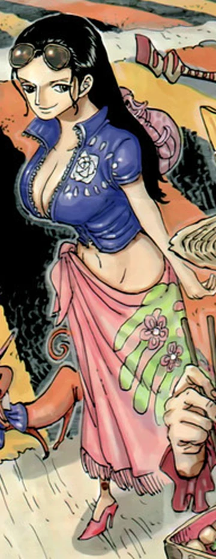
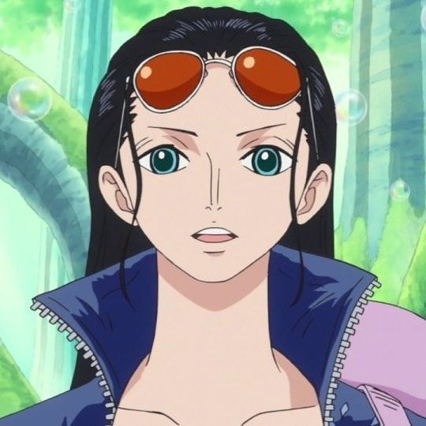

Conocida como la "Niña Demonio", es la arqueóloga de la banda y la única persona viva confirmada capaz de leer los Poneglyphs. Su sueño es encontrar el Rio Poneglyph y desentrañar la historia del Siglo Vacío.
Única superviviente del ataque de la Buster Call a la isla de eruditos Ohara. Vivió huyendo durante 20 años y traicionando a sindicatos criminales para sobrevivir, terminando como vicepresidenta de Baroque Works bajo Crocodile. Cuando Luffy le salvó la vida en Arabasta en contra de su voluntad, se escondió en su barco exigiendo unirse. Su verdadera unión emocional ocurrió en Enies Lobby, donde la tripulación declaró la guerra al Gobierno Mundial para salvarla y ella gritó por primera vez que quería vivir.

Es una mujer alta y esbelta, de cabello negro largo. Tras el salto temporal, su piel se ve más clara en el anime y siempre lleva consigo unas gafas de sol que usa como diadema. Posee un sentido del humor bastante macabro.

Rol: Arqueóloga
Apodo: Niña Demonio
Recompensa actual: 930.000.000 Berries
Lugar de origen: West Blue (Ohara)
Fruta del Diablo: Hana Hana no Mi